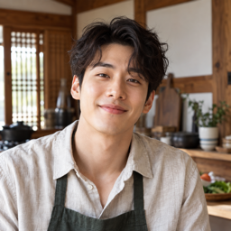
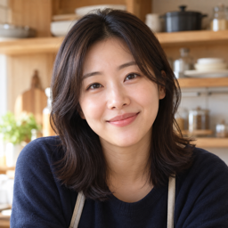

요리조아
배우고 싶었던 요리를 배울 수 있어 너무 즐거웠습니다!


배우고 싶었던 요리를 배울 수 있어 너무 즐거웠습니다!

성향이 맞는 사람들과 함께하여 요리가 더 즐거웠어요. 다음에도 또 뵙고싶어요.
현지에서 특산물들에 대해서도 알 수 있어 좋았고 활용한 요리까지 함께하며 너무 유익했어요.
함께 만들고 나누어 먹는 로컬 쿠킹 여행
지역의 음식과 함께하는 요리 경험을 주제로 한 콘셉트 여행입니다.
서울에서 함께 출발해 경기도 양평에서 버섯 들깨수제비와 계절 채소전을 만드는 당일 쿠킹 여행이에요. 강사의 시연을 보고 조별로 반죽과 재료 손질, 조리를 나눠 따뜻한 한 상을 차려요. 직접 만든 음식으로 점심을 나눈 뒤에는 자유롭게 쉬는 시간을 가져요. 양평산 식재료를 우선 활용하는 방향으로 준비하고 있으며, 진행 장소와 최종 재료는 확정 후 안내해요.
양평에서 함께 차리는 한 상. 새로운 요리를 배우고 싶은 사람들이 모여 함께 만들고 맛보는 여행이에요. 여행 템포와 교류 성향, 자유시간 선호도를 살펴 팀을 구성해요. 서울에서 차량으로 함께 이동하고, 양평에서는 3명 안팎의 조로 나눠 요리해요. 요리 강사는 시연과 실습을, Toravel 호스트는 이동과 일정 안내를 맡아요. 식사 후에는 혼자 쉬거나 원하는 사람과 산책할 수 있어요.
※ 장소와 교통 상황에 따라 세부 시간은 달라질 수 있어요.
알레르기나 피하는 식재료가 있다면 참여 전 알려주세요. 대체 가능 여부를 확인해 안내해 드릴게요.


여행 일정과 준비 내용을 확인해 주세요.
다른 여행도 확인해 보세요.